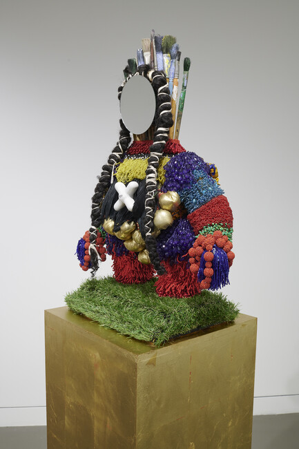
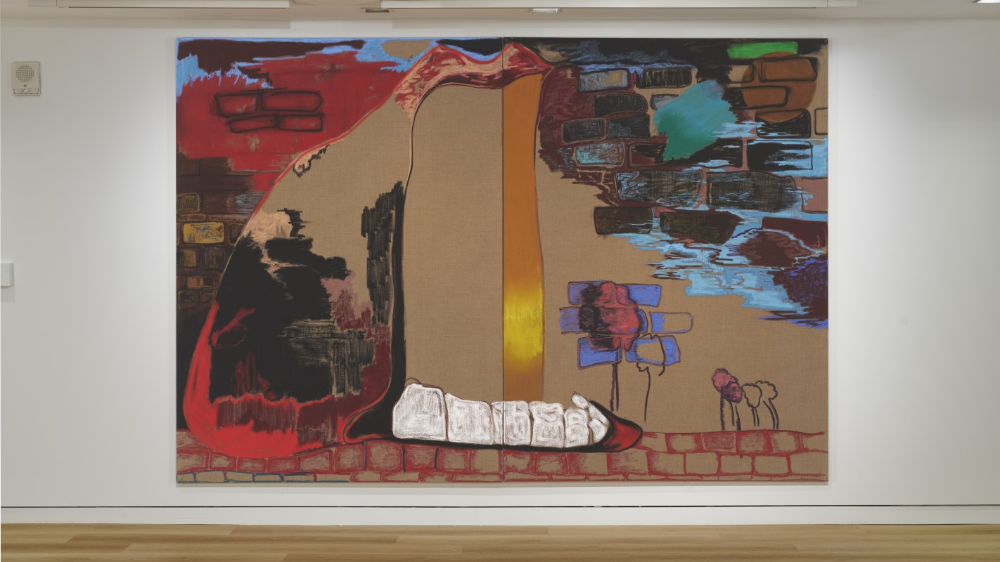
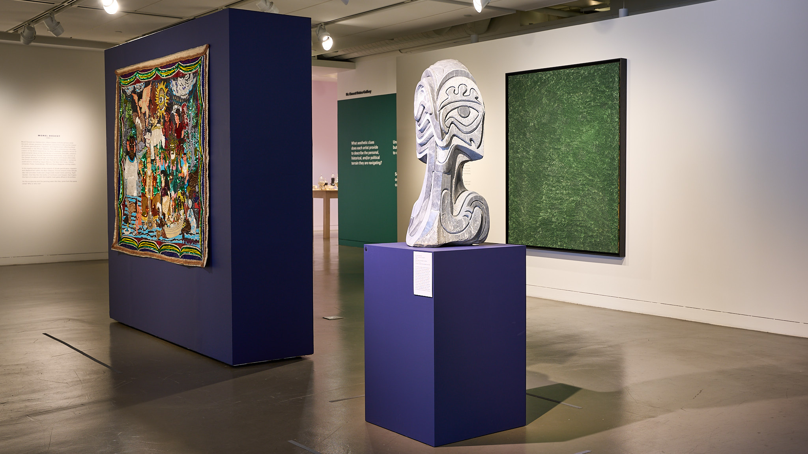

Projects & Writing
01
Projects
Selected work from my MSC in Social Data Science at the Oxford Internet Institute as well as personal projects
Papers
Foreclosing the Argument: A Computational Approach to Thought-Terminating Clichés in Online Discourse
MSc thesis · University of Oxford · 2026
How humans and LLMs disagree about what counts as a thought-terminating
cliché, using 83 trained annotators and 12 LLM configurations on 589 Reddit comments
Detecting Gen-Z Language Register: A Comparative Evaluation of Classifiers
Paper + code · Oxford Internet Institute · 2026
A comparative evaluation of six classifiers—from a word-frequency
baseline to GPT-4o-mini—for detecting Gen-Z register in text, tested on both
curated and naturalistic Reddit data
The Gail’s Effect: Café Location Expansion and Gentrification in London Neighborhoods
Paper + code · Oxford Internet Institute · 2026
A staggered difference-in-differences study using Callaway-Sant'Anna
estimation to test whether Gail's café openings drive gentrification in London
neighborhoods—or merely follow it
Other projects
F1's Parenthood Tax
A quasi-experimental study using teammate-normalized qualifying data
(2006–2024) to test whether Formula 1 drivers slow down after having their first
child—finding a small, statistically insignificant "parenthood tax" on pace
GANNI Consumer Research Survey
A market and consumer research survey exploring brand perception and
purchasing behavior for the fashion label GANNI, designed and built in Qualtrics
02
Writing
Essays written as a Smithsonian Leadership for Change intern for the MoAD Journal

We Are Also the Universe
MoAD Journal · July 31, 2024
On vanessa german's sculptural self-portraits, and how found
materials turn personal emotion into work that pulls the viewer in.

Many Meanings of Animation
MoAD Journal · August 7, 2024
On Rachel Jones's exhibition !!!!!, where oil-pastel
mouths borrow from Looney Tunes to amplify Black voices.

Currents in an Ocean of Art: Unruly Navigations
MoAD Journal · August 19, 2024
A walk through MoAD's Unruly Navigations, reading
artistic resistance through oceanic metaphor and diasporic narrative.
03
Essays
Personal musings on art, film, and culture
Art and Society: L’Art pour L’Art in Manet’s A Bar at the Folies-Bergère
How Manet’s final masterpiece fluctuates between Realism and Impressionism,
tracing the 19th-century shift toward art for art’s sake
Combatting 24/7 Time in Faces Places and The Edge of the Sea
How Varda & JR’s documentary and Rachel Carson’s seaside guide use the
art of noticing to resist the monotony of “24/7 time”
No, Martin Scorsese, Marvel Movies Can Be Cinema
On ambiguity, morally gray monsters, and how Werewolf by Night breaks
out of Marvel’s predictable mold